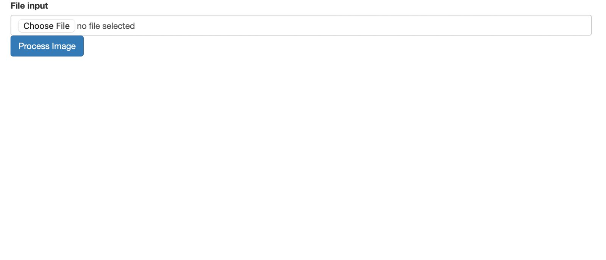
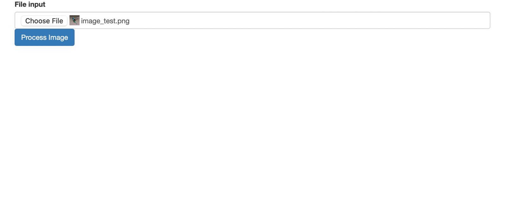
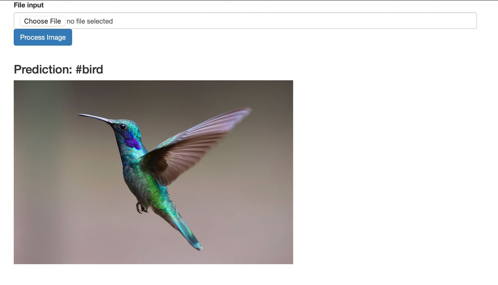

Cette page contient le travail réalisé par LUCAS Garance, ZIDAT Lydia, BOUCHOUCHI Nour, BORCHANI Sofia et FAURE Guillaume.
Introduction
L'objectif de ce projet est d’entraîner un modèle supervisé de machine learning à tagger automatiquement des images avec une étiquette textuelle qui reflète le contenu visuel de l’image. Dans notre projet, nous avons pris en considération cinq tags : dog, cat, bird, car et flower. Le modèle a été entrainé sur une base d'image issue d'un scrapping de pixelfed. \nPour plus de détails vous pouvez retrouver ci-dessous le lien du rapport :
Image Docker
Lien vers l'image Docker : ici
Tutorial
- Prerequis : Docker doit être installer sur la machine
- Etape 1: En ligne de commande Bash, se placer dans son dossier courant et lancer
docker pull redsprod/reds:v1 - Etape 2: Lancer le conteneur à partir de l'image Docker
docker run -p 8080:5000 reds_pred:tag(si port 8080 déjà occupé, choisir un autre) - Etape 3: Ouvrir le deuxième lien http dans un navigateur ou http://127.0.0.1:8080/ ou http://localhost:8080 (si un autre port que 8080 à été choisi indiqué celui-ci)
- Etape 4: Cliquer sur "choisir un fichier pour uploader l'image dont vous souhaitez réaliser le tagging 
- Etape 5: Cliquer sur "process image" pour lancer la prédiction du tagging
- Etape 6: Le tag de votre image s'affiche en haut de celle-ci

